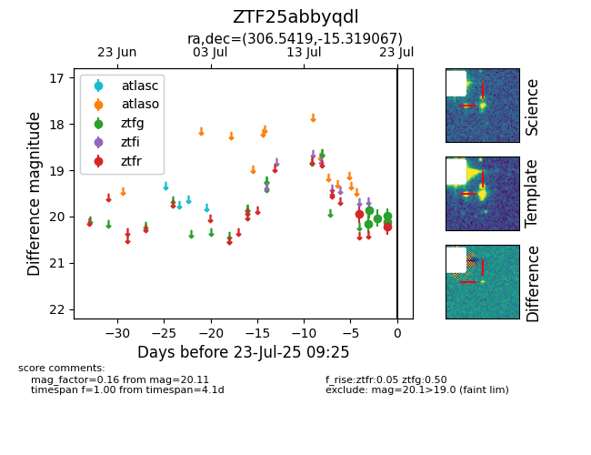

Target ZTF25abbyqdl at 2025-07-23 11:48, see:
FINK: fink-portal.org/ZTF25abbyqdl
Lasair: lasair-ztf.lsst.ac.uk/objects/ZTF25abbyqdl
ALeRCE: alerce.online/object/ZTF25abbyqdl
alt names
ZTF25abbyqdl (ztf,fink)
coordinates:
equatorial (ra, dec) = (306.5419,-15.31907)
galactic (l, b) = (29.1437,-27.72613)
photometry
last ztfg=20.11, ztfr=20.21
5 ztfg, 2 ztfr detections
